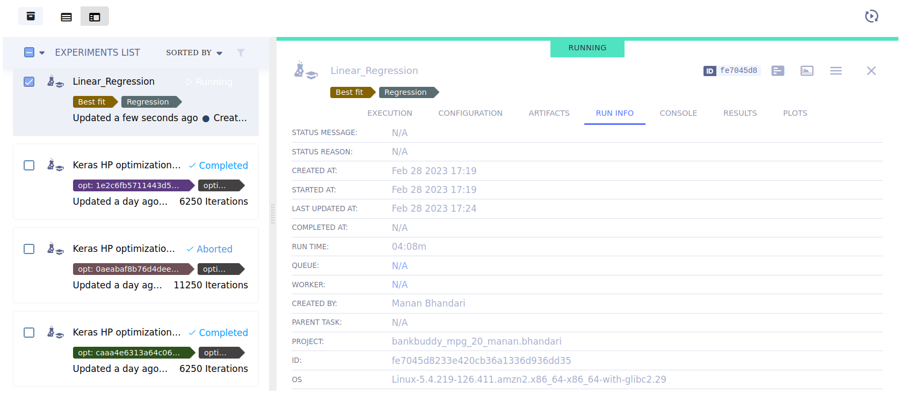

Models and Experiments#
The platform supports tracking, updating, and visualizing models. Models are stored as experiment artifacts, but unlike other artifacts that are dependent, models are independent entities with their own unique ID. Models can be accessed directly with a model object or indirectly via their creating experiment. This property makes models a standalone entry that can be used as an artifactory interface. These can be found under “Models and Experiments” tab in the Developer tab.
Experiments :
An experiment refers to a code execution session. An experiment captures the python environment, run information, console output, hyperparameters, artifacts and plots (recorded automatically).
How to use?
There are multiple functionalities that can be performed for an experiment like creating, getting an existing experiment, monitoring the progress etc. Users have to write code in Notebooks for each of the functionalities listed above. To make it easier for the users, we have provided code snippets in Notebooks under Code Snippet Explorer -> Experiments. Snippets can be easily dragged-and-dropped for usage. Let us see examples of how few functionalities can be implemented :
-
Create an Experiment :
experiment = Experiment.init(
experiment_name='Linear_Regression', # experiment name of at least 3 characters
tags=['Regression', 'Best fit'] # add a list of tags (str) to the created experiment
)
-
Get an existing experiment :
-
Monitor an experiment’s progress :
An experiment’s progress can be seen in the experiments list panel as a loader and in the INFO tab. In the image below, the progress is 50%.

Hyperparameters
Hyperparameters are a script's configuration. Many command line parameters are automatically logged by CaiML including:
- click
- argparse
- Python Fire
- LightningCLI
TensorFlow Definitions are also automatically logged: TensorFlow MNIST & TensorBoard PR Curve
Here's an example of automatic logging of tensorflow hyperparameters

To manually log hyperparameters:
- Manually log hyperparameters
experiment = Experiment.get_experiment(experiment_id='c6b147a022274092bc3e1b75f5f09d7a') # get experiment ID from GUI experiment.set_parameters_as_dict({'epochs': 20, 'max_value':100}) # pass hyperparameters as string:number dictionary -
Log python objects
Python objects such as variables, classes, numpy objects can be logged
experiment = Experiment.get_experiment(experiment_id='c6b147a022274092bc3e1b75f5f09d7a') # get experiment ID from GUI params_dict = {'epochs': 20, 'max_value':100} experiment.connect(params_dict)
Artifacts
CaiML allows easy storage of experiments' output products as artifacts that can later be accessed easily and used. Some examples of artifacts are:
- Numpy objects
- Pandas DataFrames
- PIL
- Files and folders
- Python objects
TensorFlow Definitions are also automatically logged: TensorFlow MNIST & TensorBoard PR Curve
Here's an example of automatic logging of tensorflow hyperparameters

{kind=link}
{kind=link}
{kind=link}
{kind=link}
-
Upload python objects as artifacts
Python objects can be uploaded as artifacts:
experiment = Experiment.get_experiment(experiment_id='c6b147a022274092bc3e1b75f5f09d7a') # get experiment ID from GUI params_dict = {'epochs': 20, 'max_value':100} experiment.upload_artifact(name='Parameters dictionary', artifact_object=params_dict) -
Upload files as objects
To upload files/folders as artifacts: artifact_object refers to the relative path of the file/folder
experiment = Experiment.get_experiment(experiment_id='c6b147a022274092bc3e1b75f5f09d7a') # get experiment ID from GUI experiment.upload_artifact(name='Sunflower image', artifact_object='images/sunflower.jpg')
To make an experiment non-editable
experiment = Experiment.get_experiment(experiment_id='') # get experiment ID from GUI
experiment.close()
Plots
Matplotlib plots are automatically recorded by CaiMl & can be viewed under the PLOTS tab.
Models :
CaiML provides automatic recording of standard python models such as Tensorflow, Keras, Pytorch, scikit-learn (only using joblib), XGBoost (only using joblib), FastAI, MegEngine and CatBoost.
How to use?
There are multiple functionalities that can be performed for a model like record a model, manually log a model, use a registered model, update a model etc. Users have to write code in Notebooks for each of the functionalities listed above. To make it easier for the users, we have provided code snippets in Notebooks under Code Snippet Explorer -> Models. Let us see examples of how few functionalities can be implemented :
To record a model, simply initiate a CaiML experiment in your notebook code:
{kind=link}
{kind=link}
-
Manually log a model
{kind=link}
-
Get instance of a Registered Model
{kind=link}
-
Get instance of an external Model
from caiml import InputModel
input_model = InputModel.import_model(weights_url="https://github.com/ultralytics/yolov5/releases/download/v6.2/yolov5x6.pt", # A valid URL for the weights file. For a local file user file://
name="Sample Model", # Optional
framework=None, # Optional, framework to be used like PyTorch
config_dict=None, # Optional, configuration as a dictionary
label_enumeration=None, # Optional, add labels to your model as a dictionary
tags=None) # Optional, add tags to your model as list of strings
-
Update a model
A model's weight file can be updated
from caiml import OutputModel
output_model.update_weights(weights_filename='', # Either add a local weights file here
registered_uri='https://github.com/ultralytics/yolov5/releases/download/v6.2/yolov5x6.pt') # or add a valid URL of the weights file here
-
Add metadata to model
A model's weight file can be updated
from caiml import InputModel, OutputModel
model.set_metadata("epochs", 20) # model can be an instance of either of OutputModel/InputModel class
-
Finalize a model
Make a model non-editable
from caiml import InputModel, OutputModel model.publish()
-
Get Model URL :

Similarly, other functionalities can be implemented and for each of them code snippets can be found in the notebooks under code snippet explorer.